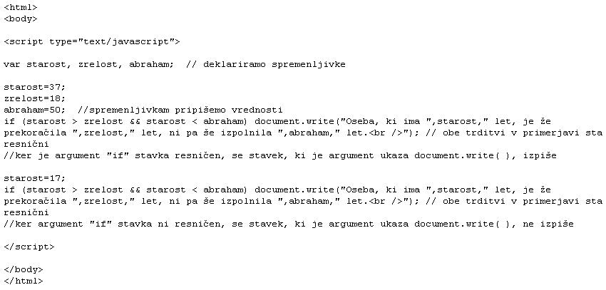
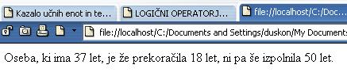
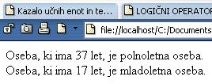

Kdor ljubi zaradi ljubezni, je slep. (Platon)
  Slika 1 in 2: Logièni operatorji - koda in videz spletne strani
 Slika 3 in 4: Pogojni operatorj - koda in videz spletne strani 1. Izdelaj spletno stran, ki bo izgledala tako, kot kažeta sliki 1 in 2. Datoteko poimenuj "13apriimek.html". Ne pozabi na konènico ".html". POZOR: Najprej NATANÈNO izdelaj vajo v tej uèni enoti in jo pokaži profesorju, nato zapiši odgovore na spodnja vprašanja. 2. V kodo primera v tej uèni enoti vstavi spodaj navedene komentarje na ustrezna mesta, ki jih ti komentarji pojasnjujejo. //Spremenljivki "starost" priredimo vrednost 17. //Uporaba logiènega operatorja "IN" v pogoju stavka "if". //Spremenljivki "starost" priredimo vrednost 37. //Uporaba logiènega operatorja "ALI" v pogoju stavka "if". //Spremenljivki "zrelost" priredimo vrednost 18. 3. Kodo primera v tej uèni enoti spremeni tako, da bo deklarirana še spremnenljivka "upokojitev". Napiši ali uporabi še en "if" stavek, ki bo preverjal pogoje za upokojitev in glede na stanje pogoja izpisal ustrezno sporoèilo. 1. Vprašanja za usmerjanje pozornosti in usvajanje novih besed: 1. Kaj je naloga logiènih operatorjev? 2. Naštej osnovne logiène operatorje in jih zapiši? 3. Kaj je naloga logiènega operatorja logièni IN? 4. Kaj je naloga logiènega operatorja logièni ALI? 5. Kaj je naloga logiènega operatorja logièni NE? 2. Zapiši od ene do pet kljuènih besed, ki povzemajo vsebino te uène enote. 3. Vprašanja za razmislek in povezovanje z lastno izkušnjo: 1. Naštej spremenljivke, ki smo jih deklarirali v kodi na sliki 1. 2. Zapiši vrednosti spremenljivk, ki smo jih pripisali v kodi na sliki 1. 3. Kateri spremenljivki smo priprisali vrednost dvakrat? Zapiši obe vrednosti. 4. Koliko ukazov za izpis besedila lahko najdemo v kodi na sliki 1? 5. Koliko stavkov za izpis se dejansko izvede in so tudi vidni na spletni strani na sliki 2? 6. Zakaj se stavek v drugem primeru ni izpisal? 4. Domaèa naloga: 1. V zvezek prepiši misel, ki je zapisana na zaèetku uène enote z rdeèimi èrkami. Zabeleži nekaj lastnih misli, ki se ti utrnejo ob razmišljanju o njej. 2. Odgovori na vprašanja, na katere nisi uspel/a odgovoriti v šoli. 5. DODATNO DELO: 1. Izdelaj spletno stran, ki bo izgledala tako, kot kažeta sliki 3 in 4. Datoteko poimenuj "13bpriimek.html". Ne pozabi na konènico ".html". |